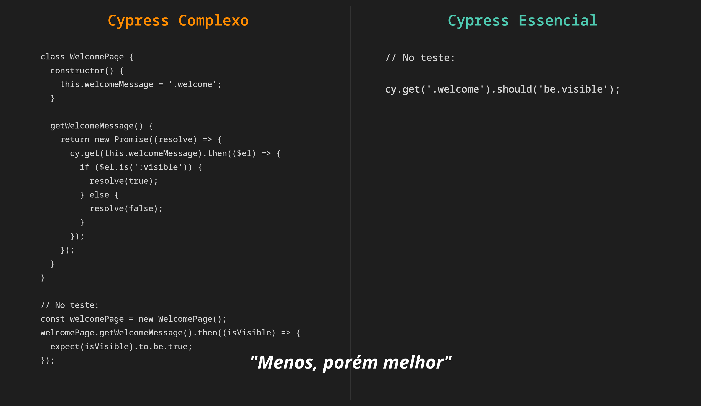

Recentemente devorei (em apenas 5 dias!) o livro "Essencialismo - A Disciplinada Busca por Menos", de Greg McKeown. Uma das premissas que mais ecoou em mim é um lema que eu já carregava: "menos, porém melhor".
Isso me fez refletir sobre um tema que sempre quis abordar: a simplicidade e a objetividade na automação de testes.

Quando complicamos o que já é simples
Vivemos uma era de frameworks poderosos, repletos de comandos e abstrações pensados para facilitar o trabalho de qualquer pessoa, independente de senioridade ou área (QA ou não). No entanto, percebo uma tendência: nós, profissionais, muitas vezes complicamos o que já é simples.
Nos pegamos adicionando camadas e mais camadas: linguagem Gherkin, estruturas excessivamente complexas de Page Objects, ou até mesmo criando soluções customizadas quando o framework já fornece um comando nativo, simples e eficaz para aquela ação.
Deixa eu ser claro: não sou contra nenhuma dessas ferramentas ou padrões. Uso vários deles. A questão que o Essencialismo me trouxe é: até que ponto essa complexidade agrega valor real?
As consequências de complicar demais
Quanto mais enfeitamos e complicamos uma automação que deveria ser clara e direta, mais criamos:
- Barreiras para novos membros da equipe.
- Desmotivação para aprender e manter os testes.
- Custo de manutenção desnecessário.
Simplicidade como porta de entrada e inclusão
Quando aproveitamos ao máximo os recursos nativos e intuitivos do framework, criamos uma porta de entrada. Pessoas com menos familiaridade com automação ou programação conseguem entender, contribuir e até criar testes de forma mais autônoma. Isso não só democratiza a qualidade dentro do time, como cria um ciclo virtuoso: a pessoa se sente capaz com algo simples, ganha confiança e, naturalmente, se abre para aprender mais sobre programação e conceitos mais avançados depois. A simplicidade inclui e motiva.
Um exemplo prático no Cypress
Imagine que você precisa verificar se um elemento está visível após uma ação. Às vezes, a organização do projeto pede um Page Object para encapsular esse seletor e a asserção. Outras vezes, especialmente em um teste pequeno ou de protótipo, a solução mais clara e direta pode ser usar o comando nativo do Cypress de forma explícita, diretamente no corpo do teste:
// Foco na clareza e na ação direta:
cy.get('[data-test="welcome-message"]').should('be.visible');O segredo está em escolher com discernimento: a estrutura (Page Object) deve servir à clareza, não se tornar um obstáculo a mais. Priorize sempre a objetividade.
O poder do hábito e a conexão com a simplicidade
E aqui faço um link com outro livro fantástico, "O Poder do Hábito", de Charles Duhigg. Hábitos — inclusive o hábito de automatizar e de aprender — florescem quando o ponto de partida é simples. Uma automação clara, usando os comandos básicos e diretos do framework de forma eficaz, é mais fácil de entender, manter e, consequentemente, gera testes mais confiáveis e robustos.
A pergunta essencial
A proposta não é ser simplório, mas sim essencial. É perguntar: "Qual é a maneira mais direta e clara de validar este comportamento, usando ao máximo o que o framework já me oferece?"
Menos camadas desnecessárias, mais foco no que é essencial. Menos, porém melhor.
Leitura Recomendada
Para se aprofundar nos conceitos que embasam essa reflexão:
-
"Essencialismo: A Disciplinada Busca por Menos" - Greg McKeown
🔗 Comprar na Amazon -
"O Poder do Hábito" - Charles Duhigg
🔗 Comprar na Amazon -
Documentação oficial do Cypress
🔗 Acessar documentação